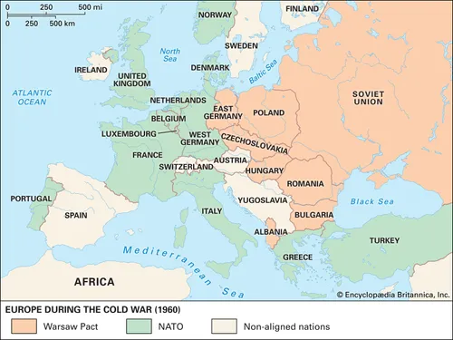

History of Europe(Roberts), Section 10: Postwar, Cold War
Roberts, Sections 6.1-2(pp. 577-626)
Two major focuses:
1.) Continental
2.) Global
Beginning notes:
Contemporary Issues
- At most, everything is 2 links away from current issues
- Possibility of derailment is high
- Please respect Dr. Wald's admonishments
- Any disagreement can be had later on
Continential Paradigms of Post-War/Cold War Europe
NATO and Warsaw Pact
Cultural Cold War
Global Paradigms of Post-War/Cold War Europe
- The growth of global governance
- The growth of economic interdependence
- The growth of global conflict
The Growth of UN Membership

Global Conflicts